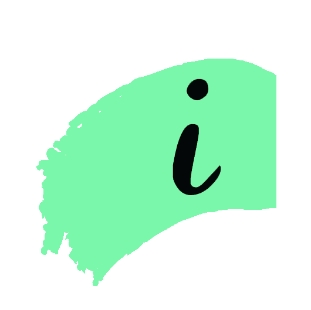

ITALIC 99
Understanding Music Production
I have had an exciting opportunity to teach my very own course through ITALIC, a Stanford academic program seeking to explore new ways to perceive and analyze art and its integration in our world. Through ITALIC, I have been tasked to imagine, design and deliver a 10-week course on the analysis of music production.
Using examples from a broad range of genres from Indie Rock to Hip Hop and Electronic Dance Music, we discussed music production from an artistic perspective: why did these decisions make the final mix? What do they add to the overall message of the song or album? Is Travis Scott overrated? Asking these questions can give us a perspective on music production as a means of effective storytelling.